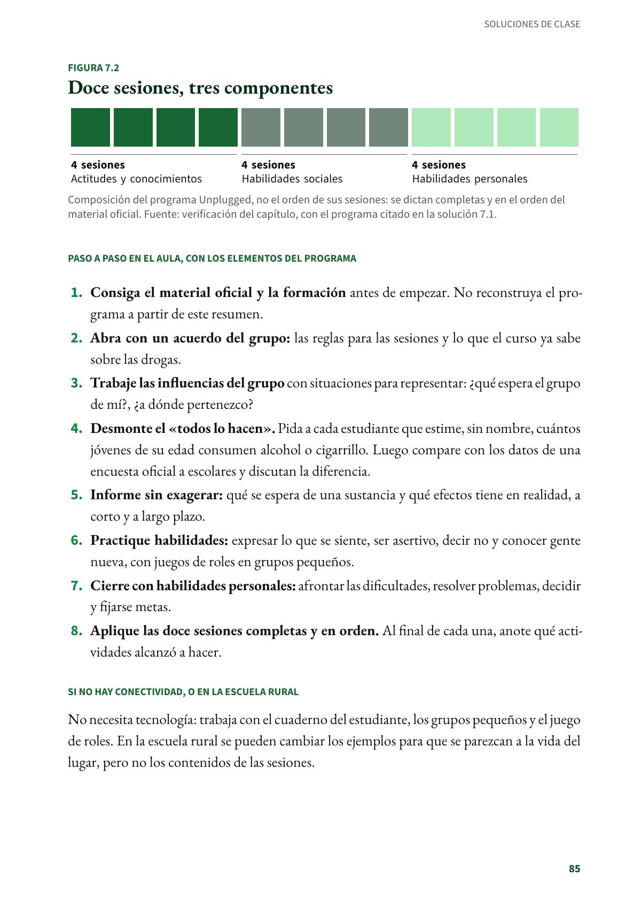
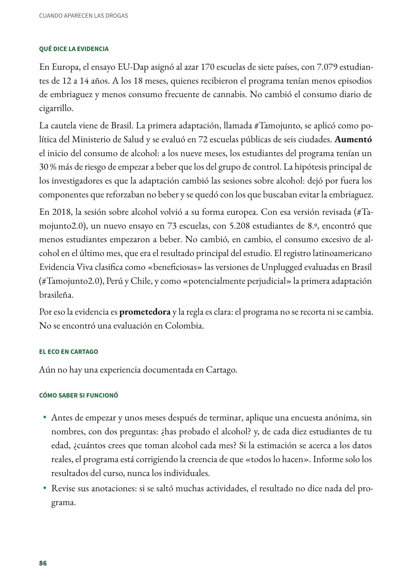
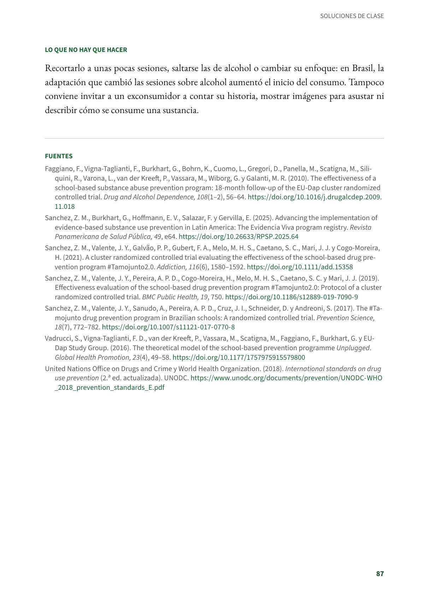
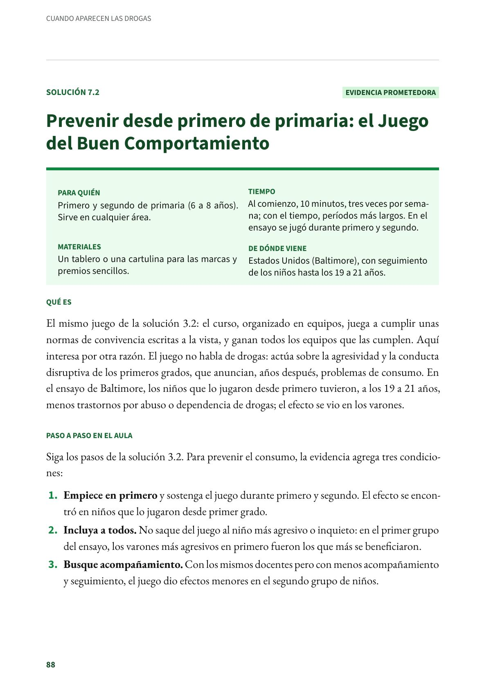

Desmontar el «todos lo hacen» y practicar cómo decir no: Unplugged
Un programa de prevención del consumo de alcohol, tabaco y otras drogas para los primeros años de secundaria. Estudiantes de 12 a 14 años (por lo general, 7.º y 8.º). Evidencia prometedora.
PDF · 5 págs. · 94 KBEn resumen
- Evidencia: prometedora.
- Para quién: Estudiantes de 12 a 14 años (por lo general, 7.º y 8.º). Dirección de grupo, ética o ciencias naturales.
- Tiempo: Doce sesiones de unos 50 minutos, idealmente una por semana.
- Materiales: El manual del docente y el cuaderno del estudiante del programa. El docente se forma antes de empezar (en Brasil, 16 horas).
- De dónde viene: Europa: ensayo EU-Dap en siete países. Adaptado y evaluado en Brasil, Chile y Perú.
Qué es
Un programa de prevención del consumo de alcohol, tabaco y otras drogas para los primeros años de secundaria. Se basa en el modelo de influencia social: no se queda en dar información, sino que enseña a manejar la presión del grupo, corrige la creencia de que «todos consumen» y entrena habilidades personales y sociales, como comunicarse, ser asertivo, decir no, manejar las emociones y el estrés, resolver problemas y tomar decisiones. Sus doce sesiones se reparten así: cuatro sobre actitudes y conocimientos acerca de las drogas, cuatro sobre habilidades sociales y cuatro sobre habilidades personales.
Paso a paso en el aula, con los elementos del programa
- Consiga el material oficial y la formación antes de empezar. No reconstruya el programa a partir de este resumen.
- Abra con un acuerdo del grupo: las reglas para las sesiones y lo que el curso ya sabe sobre las drogas.
- Trabaje las influencias del grupo con situaciones para representar: ¿qué espera el grupo de mí?, ¿a dónde pertenezco?
- Desmonte el «todos lo hacen». Pida a cada estudiante que estime, sin nombre, cuántos jóvenes de su edad consumen alcohol o cigarrillo. Luego compare con los datos de una encuesta oficial a escolares y discutan la diferencia.
- Informe sin exagerar: qué se espera de una sustancia y qué efectos tiene en realidad, a corto y a largo plazo.
- Practique habilidades: expresar lo que se siente, ser asertivo, decir no y conocer gente nueva, con juegos de roles en grupos pequeños.
- Cierre con habilidades personales: afrontar las dificultades, resolver problemas, decidir y fijarse metas.
- Aplique las doce sesiones completas y en orden. Al final de cada una, anote qué actividades alcanzó a hacer.
Si no hay conectividad, o en la escuela rural
No necesita tecnología: trabaja con el cuaderno del estudiante, los grupos pequeños y el juego de roles. En la escuela rural se pueden cambiar los ejemplos para que se parezcan a la vida del lugar, pero no los contenidos de las sesiones.
Qué dice la evidencia
En Europa, el ensayo EU-Dap asignó al azar 170 escuelas de siete países, con 7.079 estudiantes de 12 a 14 años. A los 18 meses, quienes recibieron el programa tenían menos episodios de embriaguez y menos consumo frecuente de cannabis. No cambió el consumo diario de cigarrillo.
La cautela viene de Brasil. La primera adaptación, llamada #Tamojunto, se aplicó como política del Ministerio de Salud y se evaluó en 72 escuelas públicas de seis ciudades. Aumentó el inicio del consumo de alcohol: a los nueve meses, los estudiantes del programa tenían un 30 % más de riesgo de empezar a beber que los del grupo de control. La hipótesis principal de los investigadores es que la adaptación cambió las sesiones sobre alcohol: dejó por fuera los componentes que reforzaban no beber y se quedó con los que buscaban evitar la embriaguez.
En 2018, la sesión sobre alcohol volvió a su forma europea. Con esa versión revisada (#Tamojunto2.0), un nuevo ensayo en 73 escuelas, con 5.208 estudiantes de 8.º, encontró que menos estudiantes empezaron a beber. No cambió, en cambio, el consumo excesivo de alcohol en el último mes, que era el resultado principal del estudio. El registro latinoamericano Evidencia Viva clasifica como «beneficiosas» las versiones de Unplugged evaluadas en Brasil (#Tamojunto2.0), Perú y Chile, y como «potencialmente perjudicial» la primera adaptación brasileña.
Por eso la evidencia es prometedora y la regla es clara: el programa no se recorta ni se cambia. No se encontró una evaluación en Colombia.
El eco en Cartago
Aún no hay una experiencia documentada en Cartago.
Cómo saber si funcionó
- Antes de empezar y unos meses después de terminar, aplique una encuesta anónima, sin nombres, con dos preguntas: ¿has probado el alcohol? y, de cada diez estudiantes de tu edad, ¿cuántos crees que toman alcohol cada mes? Si la estimación se acerca a los datos reales, el programa está corrigiendo la creencia de que «todos lo hacen». Informe solo los resultados del curso, nunca los individuales.
- Revise sus anotaciones: si se saltó muchas actividades, el resultado no dice nada del programa.
Lo que no hay que hacer
Recortarlo a unas pocas sesiones, saltarse las de alcohol o cambiar su enfoque: en Brasil, la adaptación que cambió las sesiones sobre alcohol aumentó el inicio del consumo. Tampoco conviene invitar a un exconsumidor a contar su historia, mostrar imágenes para asustar ni describir cómo se consume una sustancia.
Fuentes
Faggiano, F., Vigna-Taglianti, F., Burkhart, G., Bohrn, K., Cuomo, L., Gregori, D., Panella, M., Scatigna, M., Siliquini, R., Varona, L., van der Kreeft, P., Vassara, M., Wiborg, G. y Galanti, M. R. (2010). The effectiveness of a school-based substance abuse prevention program: 18-month follow-up of the EU-Dap cluster randomized controlled trial. Drug and Alcohol Dependence, 108(1–2), 56–64. doi.org
Sanchez, Z. M., Burkhart, G., Hoffmann, E. V., Salazar, F. y Gervilla, E. (2025). Advancing the implementation of evidence-based substance use prevention in Latin America: The Evidencia Viva program registry. Revista Panamericana de Salud Pública, 49, e64. doi.org
Sanchez, Z. M., Valente, J. Y., Galvão, P. P., Gubert, F. A., Melo, M. H. S., Caetano, S. C., Mari, J. J. y Cogo-Moreira, H. (2021). A cluster randomized controlled trial evaluating the effectiveness of the school-based drug prevention program #Tamojunto2.0. Addiction, 116(6), 1580–1592. doi.org
Sanchez, Z. M., Valente, J. Y., Pereira, A. P. D., Cogo-Moreira, H., Melo, M. H. S., Caetano, S. C. y Mari, J. J. (2019). Effectiveness evaluation of the school-based drug prevention program #Tamojunto2.0: Protocol of a cluster randomized controlled trial. BMC Public Health, 19, 750. doi.org
Sanchez, Z. M., Valente, J. Y., Sanudo, A., Pereira, A. P. D., Cruz, J. I., Schneider, D. y Andreoni, S. (2017). The #Tamojunto drug prevention program in Brazilian schools: A randomized controlled trial. Prevention Science, 18(7), 772–782. doi.org
Vadrucci, S., Vigna-Taglianti, F. D., van der Kreeft, P., Vassara, M., Scatigna, M., Faggiano, F., Burkhart, G. y EU-Dap Study Group. (2016). The theoretical model of the school-based prevention programme Unplugged. Global Health Promotion, 23(4), 49–58. doi.org
United Nations Office on Drugs and Crime y World Health Organization. (2018). International standards on drug use prevention (2.ª ed. actualizada). UNODC. unodc.org
Así se ve en el libro
5 páginas



